Pizza Shop
Reimagined in-store pizza ordering as a playful kiosk experience, built from physical hardware to hand-drawn interface.
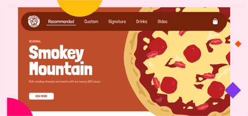
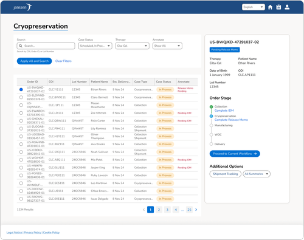
Rebuilding the core navigation of a platform that tracks personalized cell therapies from patient to lab and back, where a confusing screen isn't just friction. It's a compliance risk. The redesign reached the industry UX benchmark for the first time (78%).
Navigation had grown tangled enough to cost users time and risk wrong-order errors.
Led the end-to-end redesign, from research through a shipped, multi-release overhaul.
Reached the industry-standard UX benchmark for the first time (78%), with a 7% lift in perceived usefulness.
Personalized treatments like cell therapies require a strict chain of identity and custody to ensure patient safety and trust. The Chain of Identity & Custody (COI/C) portal manages and verifies these hand-offs throughout the order fulfillment process. But consistent user feedback revealed navigation challenges that impacted daily operations and uncovered additional opportunities.
To address this, Project Reset simplified the portal's user experience and improved workflow navigation, delivered across two releases.
The team conducted 10 site visits across the United States and Germany, which surfaced recurring themes about poor navigation between pages and tasks. Following the visits, I conducted 11 conversational user interviews with the people who had raised navigation feedback: vein-to-vein planners, manufacturing warehouse personnel, and quality (QA) staff. These confirmed the site-visit findings and revealed further opportunities.
To prioritize what I heard, I rated each finding using Nielsen Norman's severity scale, so the team could separate catastrophes from cosmetic fixes.
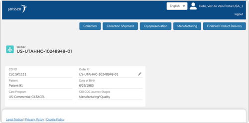
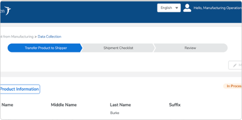
I kicked off Project Reset with a hybrid, full-day workshop across design, product, and engineering to generate solutions to the opportunities research had surfaced.
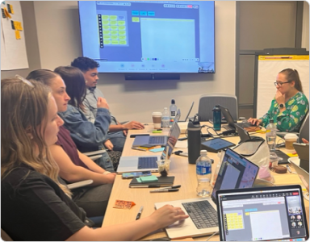
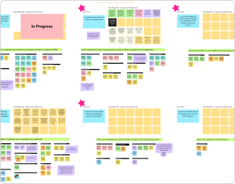
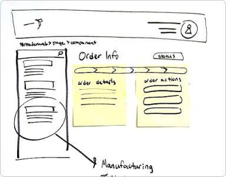
As we digitized the sketches, we iterated from low- to high-fidelity wireframes. I led the design work, directing two designers on stretch assignments as we explored how to address as many opportunities as possible. Throughout, I partnered closely with engineering in a weekly Design Collab session to keep every proposal's effort proportional to the problem it solved.
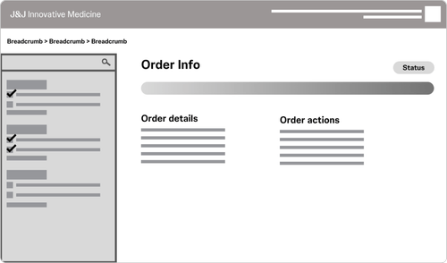
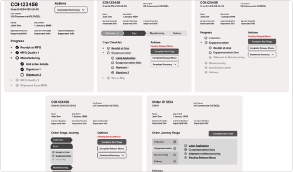
To open any workflow, users first pressed an order on the landing page, which took them to a separate "intermediary" page just to pick a task. It felt redundant, and it was costly. Users had to re-verify they'd opened the right order by scanning its details on this middle page. If it was wrong, they had to go all the way back, search again, and start over. In a system where selecting the wrong order carries real consequences, that extra hop was both a time sink and a risk.
In testing, users gravitated toward options 1 and 3, which confirmed the intermediary page didn't earn its place. But they relied on the patient information there to confirm they'd selected the right order, so I couldn't just delete it. I had to relocate what it did well. I chose to remove the page and bring that confirming information into a side panel on the landing page, so users could verify and switch orders without ever leaving home.
The redesign collapsed a two-stop navigation into one, let users correct a wrong-order selection instantly instead of restarting, and became the backbone of the new landing-page experience.
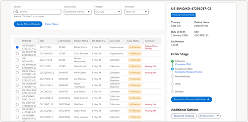
The only way back to the landing page was pressing the logo or hitting the browser's back button repeatedly. Research surfaced something I wouldn't have caught from the US alone: while clicking the logo to go home is familiar in North America, it wasn't a common expectation for our EMEA users. New and infrequent users there often couldn't recall how to get home at all, which stranded them mid-task.
Breadcrumbs and global search both appealed, but each carried heavy cost on Salesforce: deep-linking breadcrumbs into every workflow was high-effort, and compiling global search across the platform was a significant build. Weighed against the size of the problem, neither earned its cost yet. The home icon was universally recognizable, needed no translation, and directly solved the recall problem. I chose the solution that fixed the real need at a proportionate level of effort.
A single, recognizable home icon gave every user, regardless of region or usage frequency, an obvious way back, removing a quiet but persistent source of confusion for our fastest-growing user base.
While iterating, I ran several group testing sessions with the target personas, walking through proposals with pre-set questions and following up live to dig deeper. These let us pivot quickly toward the solutions that best solved the real problems.
The checklist was a big win for navigation.
Reprinting a label without a full modify was received positively, and the extra confirmation step before modifications was seen as a helpful guardrail against accidental edits.
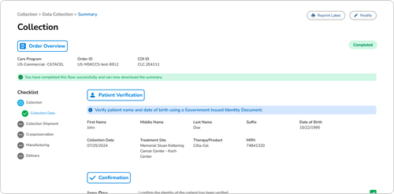
Beyond the two decisions above, Project Reset delivered a set of connected improvements:
Faster movement through non-linear tasks.
Confirms the right order at a glance.
Removing the most common reason users modified a page.
Guardrail to reduce incomplete orders and the compliance issues they caused.
In-portal training and custom reporting.
Consolidated for scalability across couriers.
I partnered with product analysts to prioritize solutions into the roadmap, and MVP features shipped across two releases in 2025. Before each release, I prepared component documentation alongside the Salesforce Lightning Design System specs to keep the design-to-dev hand-off clean.
The redesign produced concrete, undeniable wins first: it collapsed the core navigation from two stops to one, gave every user a recognizable way home regardless of region, introduced a checklist testers called a big win for navigation, and removed the top reason users modified pages (label reprints). Measured impact followed. Each year we run UX-Lite, an industry-standard survey, to benchmark the portal against peers. The 2025 results:
Partway through Project Reset, the platform also began a rebrand to align with Johnson & Johnson's 2023 identity and unite with a partner system into one ecosystem, which I took from design through hand-coding the production components.